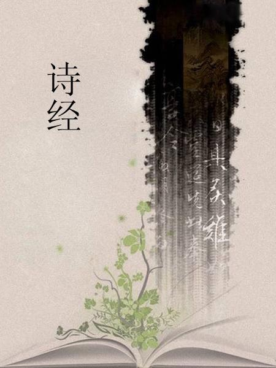
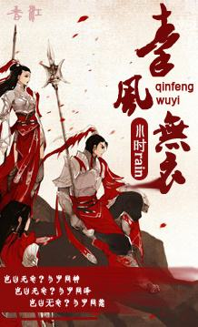

秦风·无衣
作者：佚名
岂曰无衣？与子同袍。王于兴师，修我戈矛。与子同仇！
岂曰无衣？与子同泽。王于兴师，修我矛戟。与子偕作！
岂曰无衣？与子同裳。王于兴师，修我甲兵。与子偕行！
注释
袍：长衣。行军者日以当衣，夜以当被。就是今之披风，或名斗篷。“同袍”是友爱之辞。王：指周王，秦国出兵以周天子之命为号召。
于：语助词，犹“曰”或“聿”。
兴师：出兵。秦国常和西戎交兵。秦穆公伐戎，开地千里。当时戎族是周的敌人，和戎人打仗也就是为周王征伐，秦国伐戎必然打起“王命”的旗号。
戈、矛：都是长柄的兵器，戈平头而旁有枝，矛头尖锐。
仇：《吴越春秋》引作“讐”。“讐”与“仇”同义。与子同仇：等于说你的讐敌就是我的讐敌。
泽：同“襗”内衣，指今之汗衫
戟：兵器名。古戟形似戈，具横直两锋。
裳：下衣，此指战裙。
翻译
怎能说没有衣裳？我愿和你披同样的战袍。天子让我们出兵打仗，且修好我们的戈与矛。我们面对的是共同的敌人！
怎能说没有衣裳？我愿和你穿同样的汗衣。天子让我们出兵打仗，且修好我们的矛与戟。我愿与你一同战斗！
怎能说没有衣裳？我愿和你穿同样的下裳。天子让我们出兵打仗，且修好我们的盔甲兵器。我愿与你一同前进！